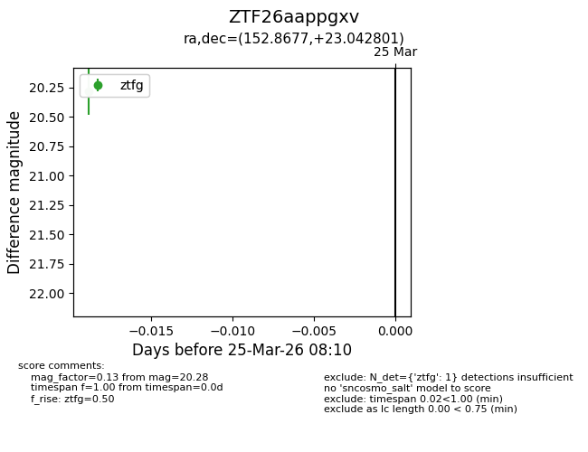
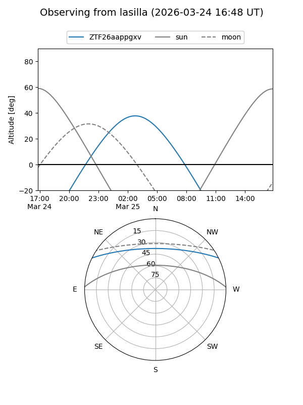
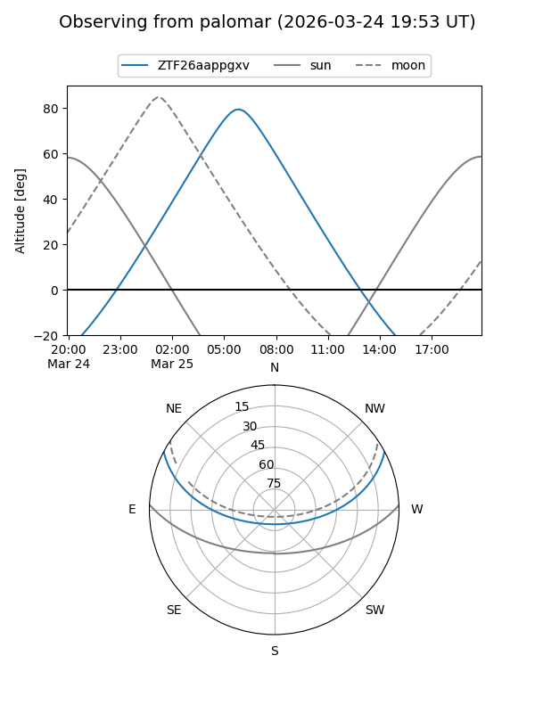

ZTF26aappgxv
Target ZTF26aappgxv at 2026-03-25 08:12
Aliases and brokers:
FINK: link
Lasair: link
ALeRCE: link
alt names
ZTF26aappgxv (ztf,fink_ztf)
Coordinates:
equatorial (ra, dec) = 152.8677,+23.04280
equatorial (HMS+DMS) = 10:11:28.24,+23:02:34.09
galactic (l, b) = (210.3290,+53.70014)
Flags:
Photometry:
last ztfg=20.28
1 ztfg detections
Lightcurve

Visibility


Additional plots